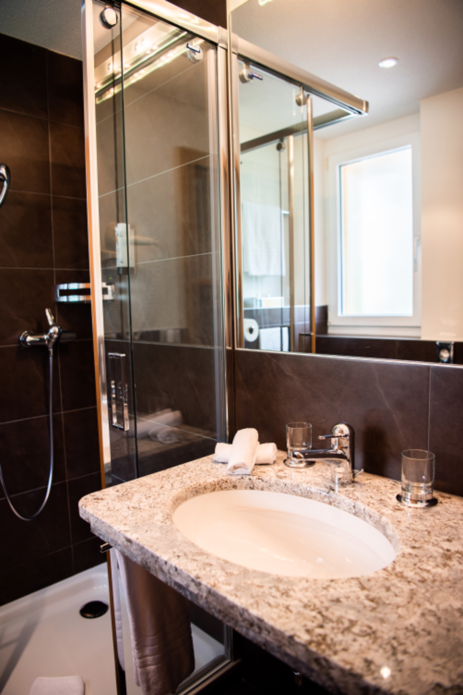
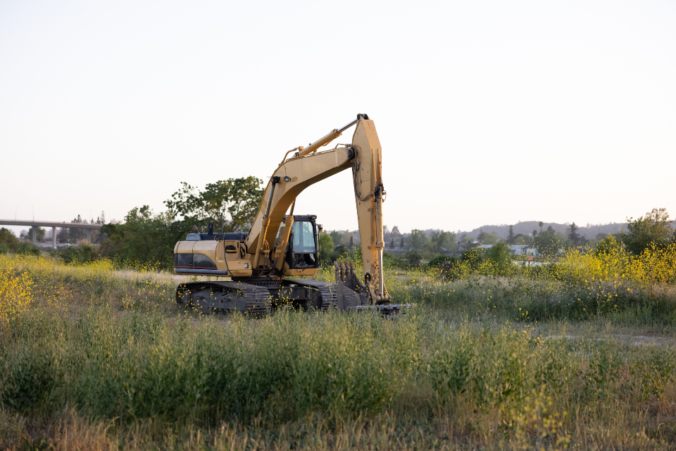

施工現場イメージ
施工現場イメージ
WORKS
対応可能な工事内容
建築一式工事・住宅基礎工事・建築工事を中心に対応しています。工事内容や対応範囲について、まずはお気軽にお電話でご相談ください。
施工現場写真は準備中です
施工現場イメージ
NEW BUILD
新築工事
木造住宅を中心とした新築のご相談を承っています。間取りや工法、仕様といった具体的な内容は、お客様のご要望や敷地の条件を伺いながら、一つひとつ丁寧にすり合わせていきます。「まずは何から考えればいいかわからない」という段階でのご相談も歓迎です。

施工現場イメージ
RENOVATION
リフォーム・増改築
水回りの改修、内装・外装の改修、間取りの変更、増築など、住まいに関するさまざまなご相談に対応しています。「古くなった設備を新しくしたい」「部屋を増やしたい」といった具体的なご要望から、「何となく住みにくいので相談したい」という漠然としたお悩みまで、お気軽にお聞かせください。実際に対応できる内容は、現地を確認のうえでご案内いたします。

施工現場イメージ
FOUNDATION
住宅基礎工事
住宅基礎工事にも対応しています。油圧ショベル2台、大型ダンプ車両2台を保有しており、基礎工事から一貫してご相談いただける体制を整えています。
OTHERS
その他、住まいに関するご相談
外構工事や住まいの修繕・メンテナンスなど、新築・リフォーム以外のご相談にも幅広く対応しています。住まいにまつわることはまずご相談いただければと思います。対応の可否は内容を確認のうえ、あらためてご案内いたします。
ESTIMATE
お見積りについて
料金は工事の内容や規模によって異なるため、現地を確認のうえ、お見積りをご案内しています。お見積りだけのご相談もお気軽にどうぞ。